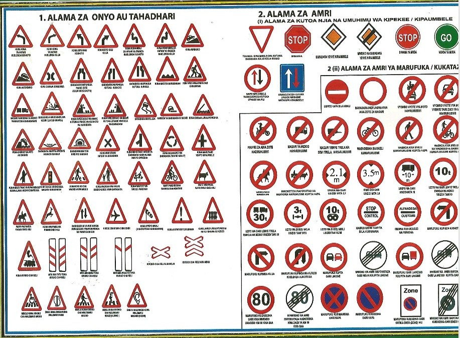
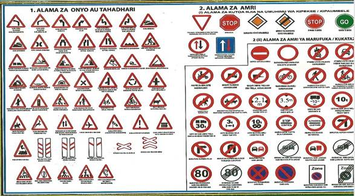

SURA YA PILI
Alama ni vibao ambavyo uwekwa kando kando mwa barabara vikiwa vimebeba ujumbe fulani ili vitoe maonyo na kumtahadharisha dereva, kutoa amri, taarifa na maelekezo mbalimbali kwa watumiaji wengine wa barabara kwa lengo la kumwakilisha askari polisi katika kuzingatia matumizi ya barabara kwa usalama zaidi.
Misingi ya Alama za barabarani imegawanyika katika makundi makuu matatu nayo ni;
Angalizo; Ikumbukwe kuwa misingi yote mitatu ya alama za usalama barabarani imelindwa na kutunzwa na alama za awali, alama za misingi na alama za usuli.
5.1 makundi ya alama na michoro ya barabarani
Alama na michoro ya barabarani vimegawanyika katika makundi makubwa matano kulingana na kazi zinazofanya na ujumbe unaotolewa kwa watumiaji wa barabara. Mara nyingi kila kundi lina alama ambazo maumbo yake yanafanana. Makundi hayo ni kama ifuatavyo;
5.1.1 Alama za tahadhari/ onyo (danger warning signs)
Alama hizi zinamuonya dereva au mtumiaji mwingine wa barabara kuhusu hatari iliyoko mbele yake. Alama za tahadhari zina maumbo ya pembe tatu yenye kitako chini. Pembeni zina ulingo mwekundu, alama zinazohusika ni nyeusi na nyuso za maumbo hayo yote ni nyeupe.
5.1.2 Alama za Amri
5.1.2.1 Amri za kukataza (Prohibitory signs)
Alama hizi zinamkataza dereva na watumiaji wengine wote wa barabara kufanya jambo fulani kama alama yenyewe inavyoonyesha.
Alama ya kukataza ina umbo la mviringo inayozungushiwa ulingo mwekundu na uso wake una rangi nyeupe na alama ya rangi nyeusi.
5.1.2.2 Alama za kulazimisha (Mandatory signs)
Alama hizi zinawalazimisha madereva na watumiaji wengine wa barabara kufanya tendo Fulani kama alama inavyoonyesha. Alama zenyewe ziko katika umbop la mviringo wenye ulingo mweupe, uso wa bluu na alama ya rangi nyeupe.
5.1.2.3 Amri kipaumbele na kusimama (Give way and priority signs)
Alama hizi zinamwamrisha dereva na watumiaji wengine wa barabara kusimama na kutoa kipaumbele kama kielelezo cha alama zinavyoelekeza. Maumbo ya alama hizi yamechanganyika.
5.2 Alama za taarifa na uelekeo (Informative and Direction signs)
Hizi ni alama ambazo zinawafahamisha madereva na watumiaji wengine wa barabara kuhusu huduma mbalimbali wanazoweka kupata katika maeneo mbalimbali inakopitia barabara.
5.2.1 Alama za usuli na pembeni mwa barabara (background marking and along the road marking)
Alama hizi hutuimika kuwasaidia madereva waweze kupona kutokana na vizuizi ambavyo vinaweza kuwepo barabarani pembeni au kando kando mwa barabara. Alama hizi zinakuwa na rangi nyeusi na njano.
 
5.3 Tafsiri ya ujumbe unaotolewa na alama na michoro ya barabarani
|
1. kona ya hatari kuelekea kushoto 2. kona ya hatari kuelekea kulia 3. kona mbili za hatari ya kwanza inaelekea kushoto 4. kona mbili za hatari ya kwanza inaelekea kulia 5. mwinuko mkali 6. mteremko mkali 7. daraja jembamba 8. barabara inapungua kutoka pande zote (kulia na kushoto) 9. barabara inapungua kutoka kushoto 10. barabara inapungua kutoka kulia 11. matuta barabarani 12. wafanyakazi barabarani 13. magari makubwa ya mizigo yanakatisha barabarani 14. changalawe laini (loose gravel) 15. uwezekano wa mawe kuporomoka kutoka upande wa kushoto wa barabara 16. uwezekano wa mawe kuporomoka kutoka upande wa kulia wa barabara 17. uterezi barabarni 18. mabega hatari 19. daraja linalofunguka 20. mto au ukingo wa gati 21. lundo 22. barabara inapita kenye handaki 23. makutano hatari ya barabara 24. makutano ya barabara ya hatari kama mchoro unavyoonyesha 25. mzunguko wa barabara (round about) 26. makutano ya barabara yenye kipaumbele 27. makutano ya barabara yenye kipaumbele 28. taa za kuongozea magari 29. kivuko cha waenda kwa miguu 30. waenda kwa miguu 31. watoto wa shule/wadogo 32. waendesha baiskeli 33. wanyama wa kufugwa 34. farasi 35. wanyam,a wa porini 36. barabara yenye njia za uelekeo tofauti 37. kiwanja cha ndege 38. upepo mkali 39. hatari isiyojulikana 40. lango linalofunguka na kufungwa au kizuizi 41. makutano ya barabara ya reli 42. mita mia tatu toka kivuko cha reli 43. mita mia mbili toka kivuko cha reli 44. mita mia moja toka kivuko cha relio 45. kivuko cha reli njia moja 46. kivuko cha reli njia mbili 47. kipaumbele 48. simama 49. barabara yenye kipaumbele 50. mwisho wa barabara yenye kipaumbele 51. simama ya muda 52. nenda ya muda 53. toa kipaumbele kwa madereva wa magari wanaokuja mbele yako 54. magari yanayokuja yatatoa kipaumbele 55. hakuna kuingia. 56. barabara imefungwa kwa vyombo vyote vya usafiri 57. marufuku kwa vyombo vyote vya moto 58. vyombo vyote vya moto vyenye tairi zaidi ya mbili, haviruhusiwi 59. pikipiki na mopedi haviruhusiwi 60. magari ya mizigo hayaruhusiwi 61. magari yenye trela na semi trela hayaruhusiwi 62. waendesha baiskeli hawaruhusiwi 63. waenda kwa miguu hawaruhusiwi kupita hapa. 64. waenda kwa miguu na waendesha baiskeli hawaruhusiwi kupita hapa 65. wapanda farasi hawaruhusiwi 66. mikokoteni inayovutwa na wanyama hairihusiwi kupita hapa 67. upana wa gari usizidi mita 2.1 68. kimo cha gari kisizidi mita 3.5 69. urefu wa gari usizidi mita 10 70. uzito wa gari usizidi tani 10 71. uzito wa gari lenye trela usizidi tani 30 72. uzito wa ekseli moja usizidi tani 3 73. uzito wa ekseli mbili usizidi tani 10 74. hairuhusiwi kupita bila kusimama 75. simama kwa ukaguzi wa forodhani 76. marufuku kupinda kushoto 77. marufuku kuppinda kulia 78. marufuku kupinda na kurudi mwelekeo uliotoka katika barabara moja 79. marufuku kulipita gari lingine 80. mwisho wa amri inayokataza gari kulipita lingine 81. marufuku gari la miziogo kulipita gari lingine 82. mwisho wa amri inayokataza gari la mizigo kulipita gari lingine 83. marufuku kuendesha gari kwa mwendo unaozidi km 80 kwa saa 84. mwisho wa amri inayokataza kuendesha kwa zaidi ya km 80 kwa saa 85. marufuku kusimamisha gari hapa 86. marufuku kuegesha gari hapa. 87. marufuku kuegesha gari katika eneo (zone) hili 88. mwisho wa amri inayokataza kuegesha gari katika eneo hili 89. pita upande – kushoto
|
90. pita upande – kulia 91. mbele pinda kushoto 92. mbele pinda kulia 93. mbele nenda mopja kwa moja 94. mbele nenda moja kwa moja au pinda kushoto 95. mbele nenda moja kwa moja au pinda kulia 96. mbele pinda kushoto au kulia 97. pita upande wa kushoto 98. pita upande wa kulia 99. mzunguiko (round abpout) 100. waenda kwa miguu, lazima wapite hapa 101. wapanda baiskeli, lazima wapite hapa 102. waenda kwa miguu na wapanda baiskeli, lazima wapite hapa 103. unaingia eneo la makazi ya watu 104. unatoka eneo la makazi ya watu 105. unaingia eneo la mji 106. unatoka eneo la mji 107. barabara kuu (n2) 108. mji mkuu 109. kituo cha basi 110. barabara ya hadhi ndogo (wilaya na vijijini) 111. mji mdogo 112. kituo cha tax 113. kivuko cha waenda kwa miguu 114. sehemu ya kupishana magari kando ya barabara 115. sehemu ya kuegesha magari 116. sehemu ya kuegesha magari kwa muda maalumu 117. barabara ya uelekeo mmoja (one way road) 118. pita upande wa kulia au kushoto 119. hospitali 120. barabara haiendelei (mwisho wa barabara) 121. njia maalum kwa ajili ya mabasi tu 122. mwisho wa njia maalum ya mabasi tu 123. barabara ya magari yaendayo kasi (barabara ya mwendo wa kasi) 124. mwisho wa barabara ya magari yaendayo kasi 125. unaingia eneo la makazi ya watu (sehemu iliyojengeka) 126. umetoka eneo la makazi ya watu (lililojengeka) 127. kituo cha huduma ya kwanza 128. huduma ya simu. 129. huduma ya karakana (matengenezo ya gari) 130. kituo cha mafuta 131. sehemu ya malazi 132. huduma ya chakula 133. huduma ya viburudisho 134. eneo la mandari (picnic) 135. eneo la kupiga kambi 136. eneo la kupiga kambi ya gari nyumba (caravan) 137. bwawa au pwani ambapo unaweza kuogelea 138. pinda kulia – barabara kuu 139. pinda kulia – barabara kuu ya daraja la juu 140. mbele pinda kulia – barabara kuu 141. pinda kulia – barabara ndogo 142. pinda kulia barabara ndogo za daraja la chini 143. mbele pinda kulia – barabara ndogo 144. mbele pinda kulia – barabara kuu 145. njia katika barabara kuu yenye njia zaidi ya moja za uelekeo mmoja. 146. utambulisho – mapema, pinda kulia – barabara kuu ya daraja la juu 147. onyo kabla ya mchepuo 148. mbele – mchepuo wa muda mfupi – pinda kulia 149. mbele pinda pinda kulia barabara ndogo za daraja la chini 150. mchepuo 151. umbali 152. mwanzo wa umbali 153. kipindi cha muda 154. mteremko/ mlima 155. upana husika 156. uelekeo pande mbili 157. magari madogo ya abiria 158. uelekeo mbele kulia 159. ishara ya usuli pande moja 160. ishara ya usuli pande mbili 161. ishara ya usuli kuonesha uelekeo 162. ishara ya usuli hatari 163. ishara ya usuli pande mbili hatari 164. ishara ya usuli ya kutokea 165. ishara ya usuli ya kutundikwa 166. alama ya kutokea barabara kuu 167. taa za kuongoza magari 168. taa za kuongoza waenda kwa miguu 169. taa za kuongoza magari katika makutano ya barabara na njia ya reli 170. taa za kumulikamulika nyekundu kwa ajili ya kusimamisha magari kwa muda mfupi pale inapobidi (mfano: kwenye daraja linalofunguka, uwanja wa ndege, mahandaki n.k) 171. taa za kuingia kwenye njia 172. mstari wa amri inayokataza gari moja kulipita lingine 173. mstari wa onyo 174. mstari unaogawa njia katika barabara ya magari 175. mstari unaotenganisha njia ya magri ya abiria na njia zingine 176. mstari wa pembeni mwa barabara ya magari (unagawa bega na barabara ya magari) 177. mistari ya kutokea pembeni mwa barabara ya magari 178. kivuko cha waenda kwa miguu.
|